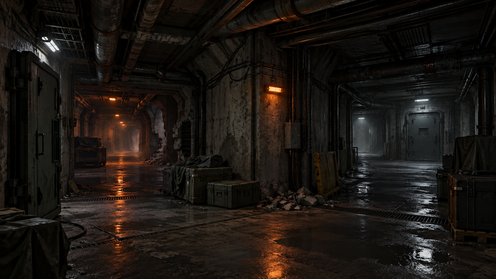

01
Связанные раунды
Один сюжетный рейд или серия раундов, где результаты предыдущей операции влияют на следующую.
Брифинг 02 // Сценарий SCP:SL
«Чёрный сигнал» — специальный сюжетный рейд на сервере Legacy. Три группы войдут в изолированный сектор с разными точками появления, ограниченными ресурсами и закрытыми вводными.

Формат события
01
Один сюжетный рейд или серия раундов, где результаты предыдущей операции влияют на следующую.
02
Оружие, боеприпасы, медицина и карты доступа становятся частью экономики рейда.
03
Документы, накопители и отдельные предметы открывают маршруты и изменяют развитие операции.
04
Получить нужный предмет недостаточно: результат фиксируется только после выхода из сектора.
Последовательность
Участники собираются на Legacy и получают закрытый брифинг своей стороны.
Каждая группа появляется со своим стартовым комплектом и маршрутом.
Карты доступа, жетоны, накопители и коды открывают новые помещения.
Группы могут торговать, обмениваться информацией и создавать временные союзы.
События у объекта № 12 изменят обстановку и откроют заключительную часть рейда.
Результат фиксируется после достижения активной точки эвакуации.
Правила Legacy действуют
Следующий файл